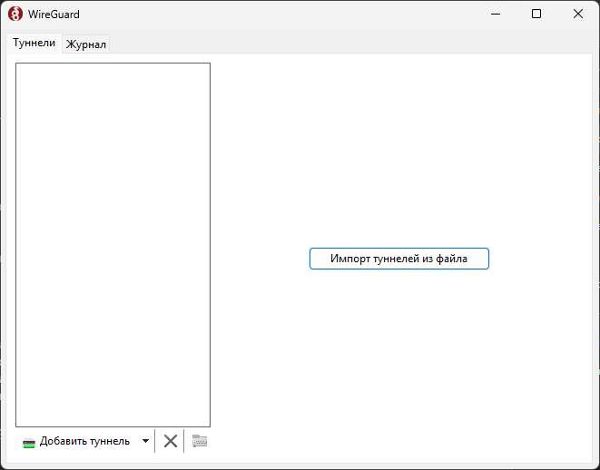
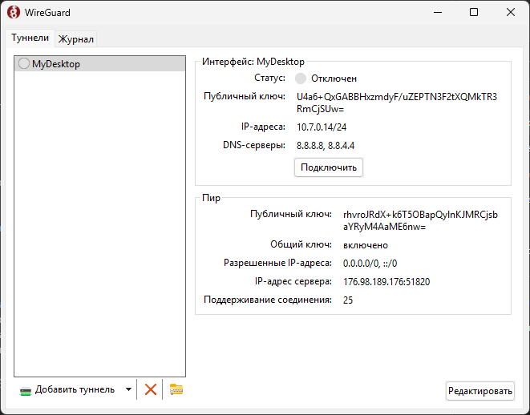
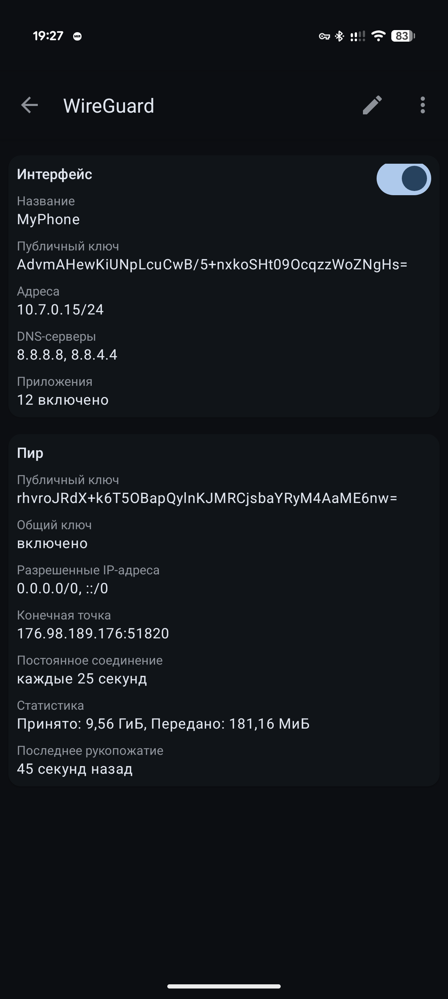
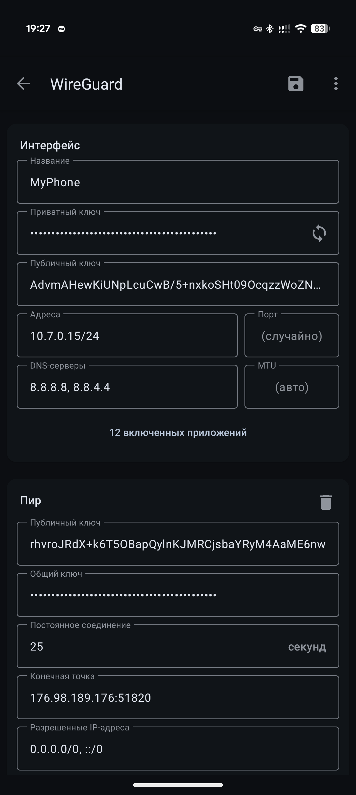
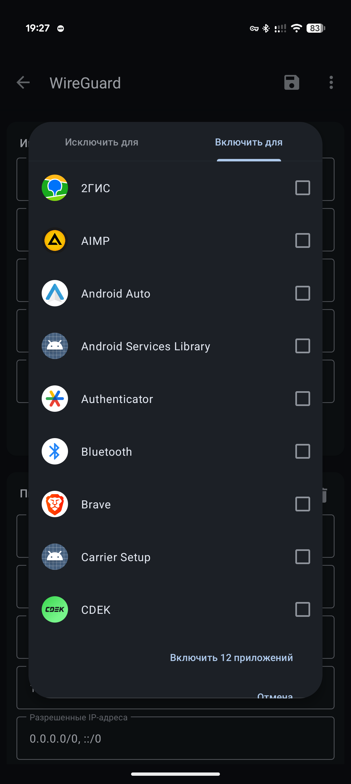
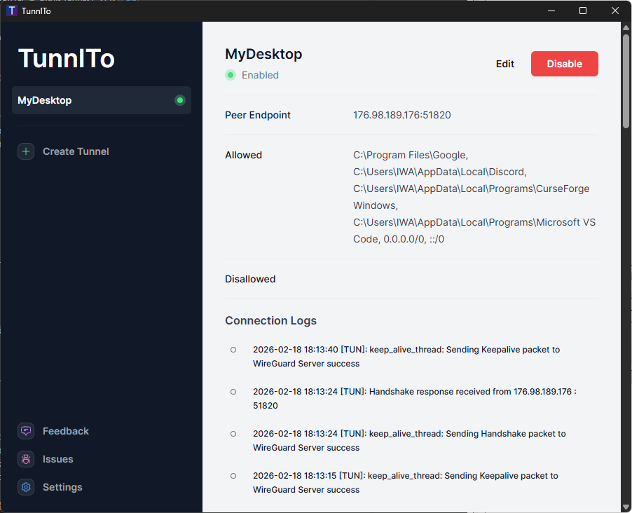
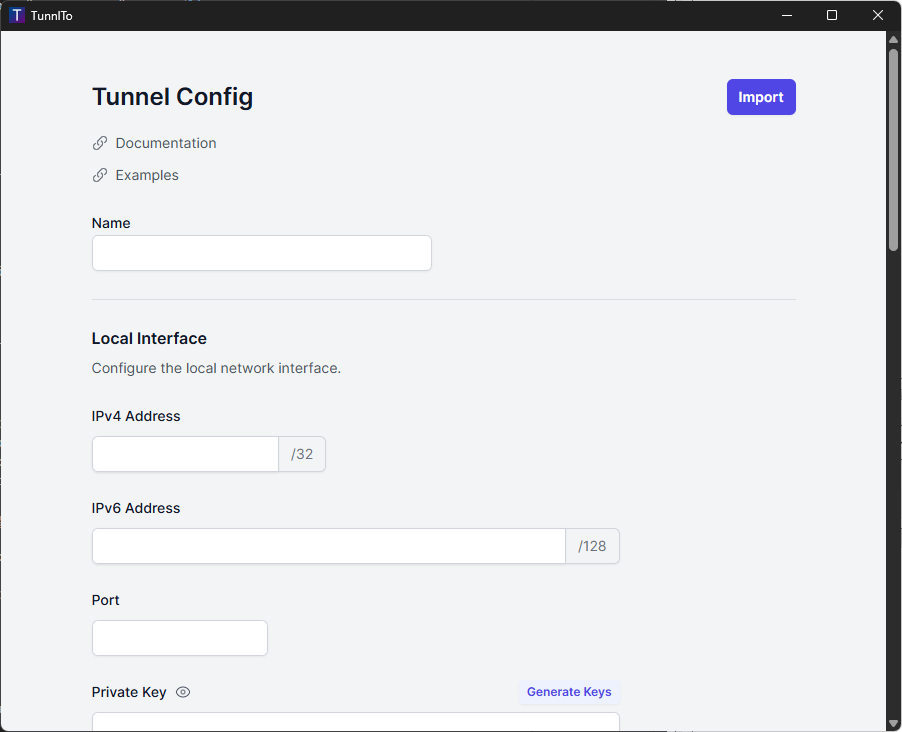
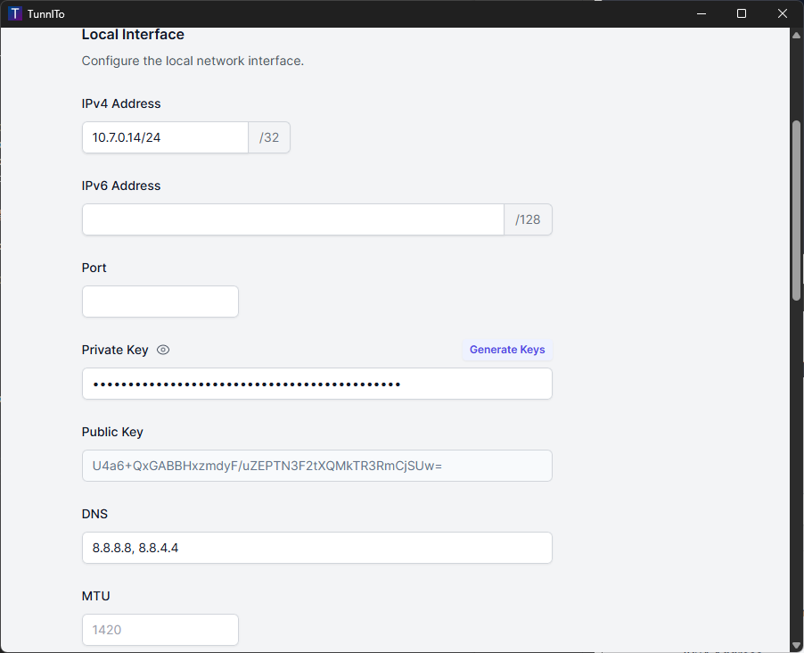
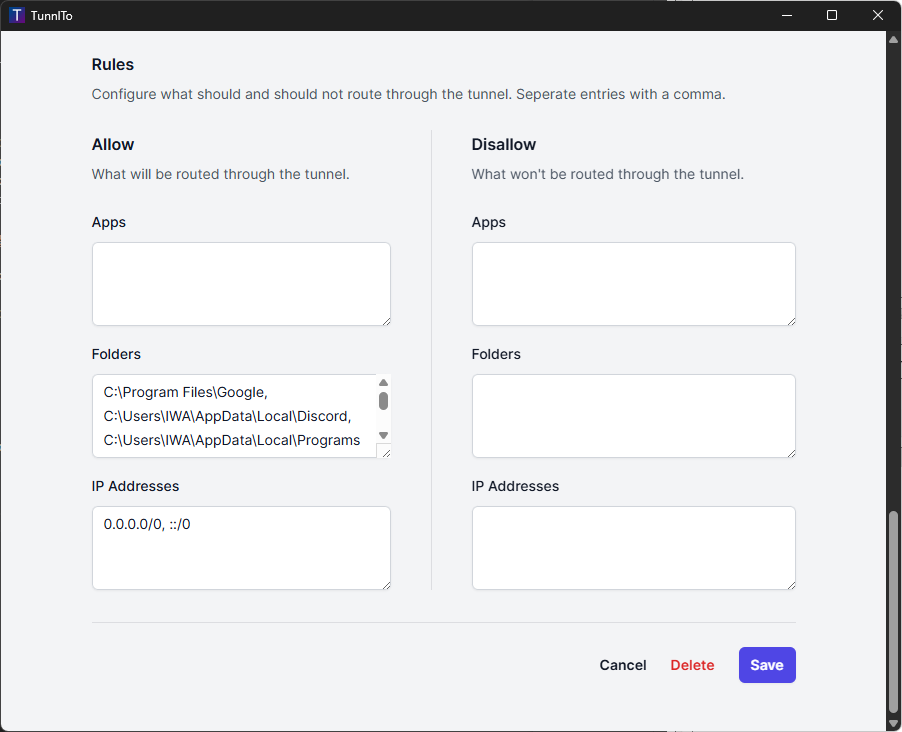

Правило, по сути, лишь одно: пользоваться VPN только в случае необходимости доступа к запрещённым в РФ
ресурсам (Instagram, YouTube, Discord и т.д.).
Так же не нужно шарить свои конфиги посторонним людям!!!
Ниже будет чуть более конкретная информация:
Не заниматься пиратством из под VPN:
Не заходить на torrent-трекеры
Ничего не скачивать с torrent-трекеров
Ничего не скачивать и не раздавать через torrent-клиенты с включенным VPN
Не пользоваться другими пиратскими сайтами, которые нарушают авторское право (всякие сайты с
сериалами, фильмами и т.д.)
Не пользоваться всякими модифицированными клиентами официальных приложений с включённым VPN
Не посещать и не пользоваться ресурсами, запрещёнными в ЕС:
Не пользоваться сайтами, относящимися к теневому сегменту интернета
Не заходить на ресурсы, которые относятся к гос. структурам РФ (гос. медиа, гос. ресурсы и т.д.)
Не посещать сайты букмекеров, бурмалды (казино) и прочей лудоманской хрени
Не заниматься всякими мутными делами:
Не заниматься DOS/DDOS атаками
Не заниматься взломами чего-либо
Не заниматься сливами информации
В целом не заниматься всем тем, что касается теневого сегмента
Теперь немного поговорим о ПО:
Расписывать буду, преимущественно для ОС Windows/Android, яблочники сами разберётесь :^)
🪟Софт
Основных утилит две, на выбор: WireGuard и TunnlTo.
WireGuard прогоняет весь ваш интернет трафик, а через TunnlTo можно роутить его, чтобы он ходил только в
нужные приложения/папки/IP адреса
С TunnlTo дела обстоят поинтереснее: есть новая версия, которая поддерживается, но не является Open
Source и есть старая версия, но которая не поддерживается разработчиком.
Лично я пользуюсь старой версией, но всё остаётся на ваше усмотрение: Новая версия Старая версия
📱WireGuard
Для того, чтобы пользоваться WireGuard нужно нажать на кнопку "Импорт туннелей из файла" и выбрать ваш
конфиг:

🔍
После выбора достаточно нажать на кнопку "Подключить":

🔍
Ура, победа, вы великолепны!
В мобильном приложении WireGuard всё делается по аналогии с десктопной версией, но так же можно роутить
трафик как в TunnlTo.
Для начала мы заходим в наш конфиг:

🔍
Затем мы жмём на карандашик в правом верхнем углу и проваливаемся в настройки:

🔍
Далее жмём на кнопку "Все приложения" и выбираем, что нам нужно в пунктах "Включить для" или "Исключить
для". После выбора необходимо нажать на иконку дискеты в правом верхнем углу:

🔍
🔄TunnlTo
Теперь поговорим про TunnlTo.
Показывать буду на примере старой версии, на новой, думаю, особых каких-то отличий не будет.
Для начала нужно нажать на кнопку "Create Tunnel":

🔍
Затем нужно нажать на кнопку "Import" и выбрать ваш конфиг:

🔍
После выбора конфига почти что все поля будут заполнены и ничего там не надо трогать:

🔍
Далее мы скроллимся в самый низ и видим 2 окна: "Allow" и "Disallow" (Разрешено/Запрещено):

🔍
В "Allow" можно указывать приложения, папки и IP адреса, куда нам нужно, чтобы ходило через VPN (всё это
делается в соответствующих полях (Apps - приложения, Folders - папки, IP Adresses - IP адреса)).
В "Disallow" указывается всё, куда нам не нужно роутить трафик (можно оставлять пустым).
Если вы указываете несколько папок/адресов/приложений, то делать это нужно через запятую (пример есть
так же на скриншоте).
На скриншоте выше видно, что в "Allow" у меня указаны просто папки, где находятся необходимые мне
программы.
🔧Проблемы с TunnlTo
Есть одна проблема со старой версией TunnlTo: заключается она в том, что настройки спустя время могут не
сохраняться, так же не сохраняются новые конфиги и т.д.
Для этого нам надо:
Удалить TunnlTo: делается это либо через настройки → удаление программ, либо через "Uninstall
TunnlTo" в папке с самой программой;
Удалить WireSock VPN CLient через настройки → удаление программ;
Удалить приложение WireGuard, если оно установлено отдельно. Так же через настройки → удаление
программ;